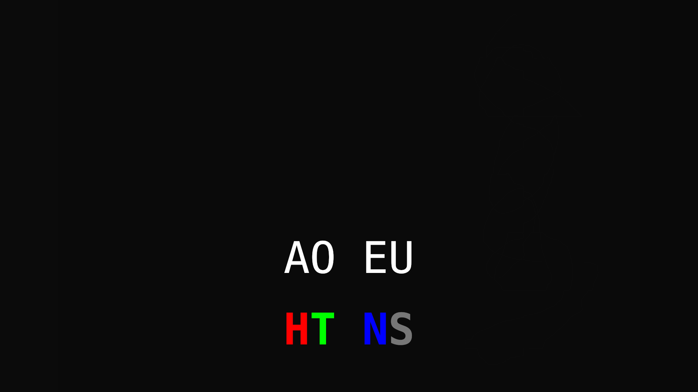
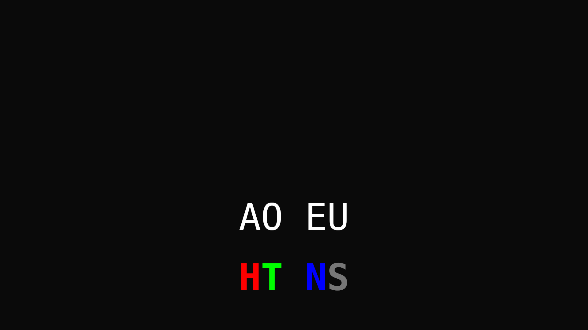
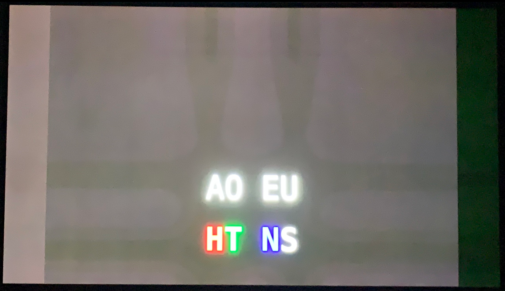

When the images are shown, patches slowly appear that span horizontally and vertically from the text. Patches should be visible after displaying the image for 30s in fullscreen at the factory default Gamer 1 setting in SDR.
Click an image to fullscreen. Click again to exit fullscreen.
1. dark background, text, light bar on left, dark bar on right, light scribble on right:
2. dark background, text:
3. dark background (bring up the monitor settings panel for 30s to see dark patches):
iPhone picture of what I see with image 1:
